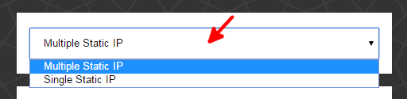
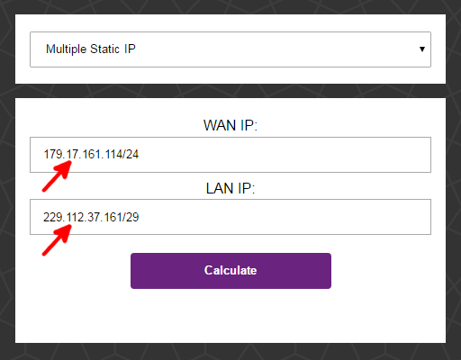

Javes
Subnet Calculator
Multiple Static IP
Single Static IP
WAN IP:
LAN IP:
How to use
How to use
Select the "type" of static IP - multiple or single static IP

Input the IP address(es) in
CIDR format

Single
static IP requires just the IP address (which is actually the WAN). The number after the slash is likely "24" (needs confirmation)
Multiple
static IP requires both the WAN and LAN IP addresses. The number after the slash for WAN IP is likely "24" (needs confirmation)
The CIDR format has 3 decimal dots and 1 slash
Example of an IP address in CIDR format: 179.17.161.114/24
Click on "Calculate"
Profit!